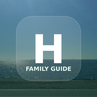

Gerade offline.
Der Guide wird beim ersten vollständigen Öffnen gespeichert. Öffne die Startseite erneut, sobald eine Verbindung besteht; danach stehen Texte, Bilder und Offline-Karten auch ohne Netz zur Verfügung.
Erneut versuchen
Der Guide wird beim ersten vollständigen Öffnen gespeichert. Öffne die Startseite erneut, sobald eine Verbindung besteht; danach stehen Texte, Bilder und Offline-Karten auch ohne Netz zur Verfügung.
Erneut versuchen